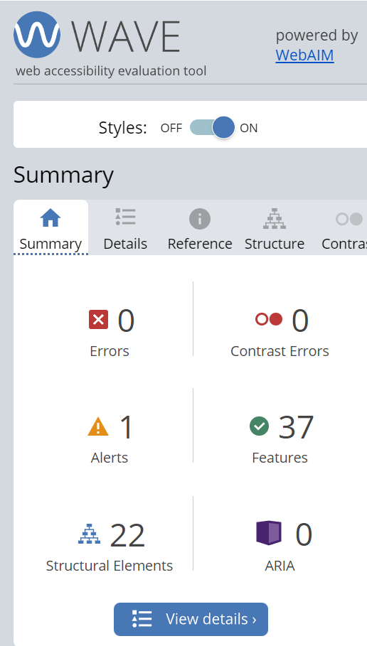

WAVE test
Submitted our webpage to the WCAG testing site WAVE Web Accessibility Evaluation Tool. The results can be seen to the right.
We had no errors and therefore nothing big to change, but created this page to be able to show the results.
There's one alert, and we got it because we skipped the h2 tag in Meny.html.
Mozilla vs Chrome web browser
We opened the webpage in Chrome and Mozilla, but our page behaved differently on the two browsers.